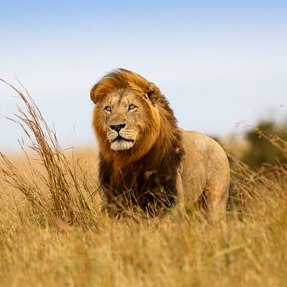
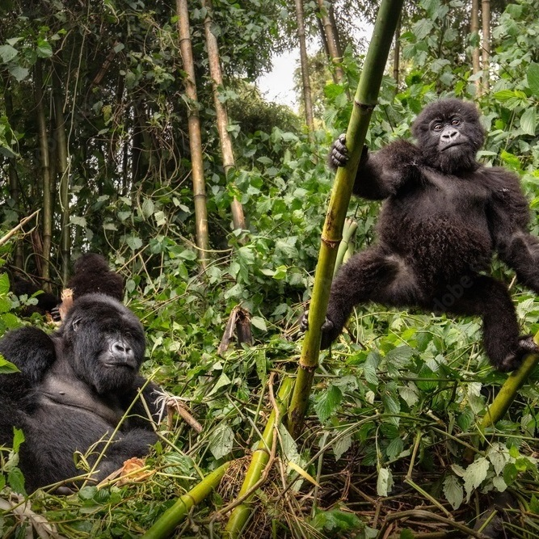
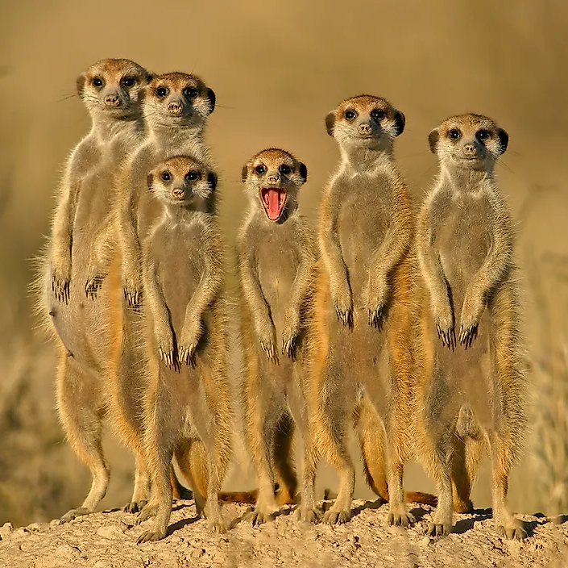
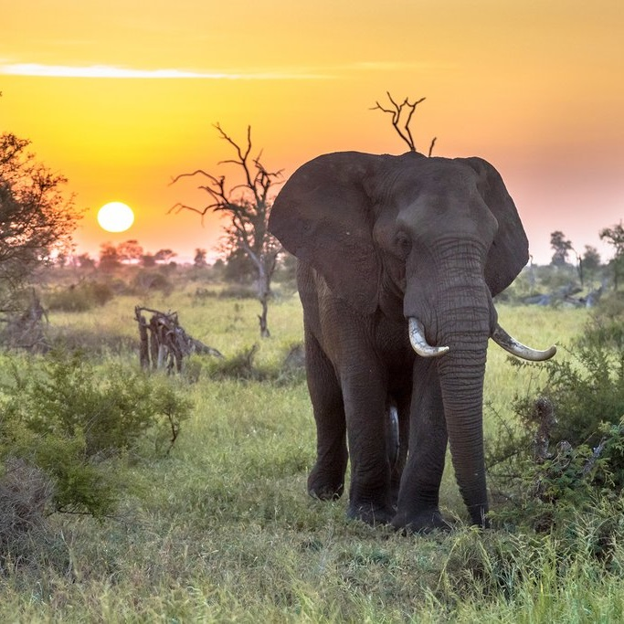

Habitats


Savannas
The iconic grasslands of Africa, home to lions, elephants, and zebras.

Rainforests
Dense forests teeming with life, including gorillas and vibrant bird species.

Deserts
Explore the arid beauty of the Kalahari and Namib deserts, where unique adaptations support incredible wildlife.

Regions
Experience safaris in renowned locations such as the Serengeti, Masai Mara, and Kruger National Park.